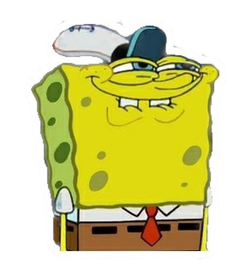
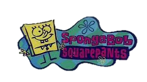
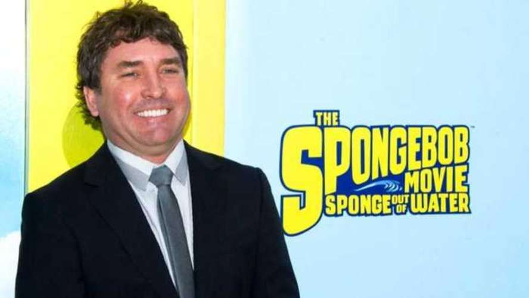

BOB ESPONJA
Esta es la cancion de inicio de los capitulos del Bob Toronja:
Bob Esponja Pantalones Cuadrados es el personaje principal y el epónimo de la serie animada Bob Esponja, que se emitió por primera vez el 1 de mayo de 1999 en Nickelodeon. El personaje fue diseñado por el creador Stephen Hillenburg, y es interpretado por Tom Kenny. En España está doblado por Álex Saudinós y en Hispanoamérica en la temporada 1 contó con la voz de Kaihiamal Martínez y desde la temporada 2 hasta la actualidad con la voz de Luis Carreño.
Bob es una esponja de mar que vive en una piña en la ciudad de Fondo de Bikini, con su caracol Gary como mascota. Trabaja como freidor en el Crustáceo Cascarudo o Crustáceo Crujiente (Krusty Krab en inglés), junto con su vecino, Calamardo Tentáculos. Es el mejor amigo de Patricio Estrella, y le encanta soplar burbujas y pescar medusas. También es uno de los estudiantes de la escuela de navegación de la Sra. Puff. Dónde ha reprobado el examen final en incontables ocasiones y así no poder obtener una licencia de manejo.
A partir de la película de 2020 The SpongeBob Movie: Sponge on the Run, Bob Esponja se ha convertido en la mascota de Nickelodeon Movies y aparece en su logotipo de producción

Bob es una esponja de mar de grandes ojos azules con pestañas, una boca con dientes delanteros prominentes, hoyuelo y pecas. Se parece más a una esponja de cocina que a una esponja de mar, como cuando la demostración era solamente una idea aproximada, Stephen Hillenburg decidió que fuera cocinero. Puede crecer de los pedazos que se caen de él. Sus miembros pueden llegar a ser variables en longitud y forma a voluntad y son retractables así como desmontables. En el episodio "Turno de ultratumba" se revela que los miembros de Bob se pueden regenerar (algo también confirmado por el), y también se pueden consumir.
Bob usa una camisa blanca, una corbata roja, unos pantalones color café y un cinturón negro. Algunas veces ha aparecido desnudo o en ropa interior. El pantalón y la camisa están siempre unidos, como si fueran una sola prenda. Sus mangas están separadas de la camisa y no se las quita junto con esta, por ejemplo, lleva sus mangas junto con el traje de baño. Los calcetines son blancos con franjas rojas y azules, y los usa hasta la rodilla Sus zapatos son negros y brillantes, con forma de esfera en la parte delantera. Generalmente usa ropa interior color blanca, aunque a veces ha usado color azul, verde, roja, también que tiene más de una cuando Neptuno no cree que es el cocinero real. De noche, a veces usa una bata verde, pero con todo va a dormirse con su ropa interior, calcetines y zapatos. Cuando va a la Laguna Goo, usa unos pantalones cortos azules (aunque tenga puesto sus calzoncillos, sus calcetines y sus zapatos). También usa una pajarita roja en vez de su corbata en ocasiones especiales. Aunque las esponjas son invertebrados, Bob ha demostrado que ha tenido huesos en varios episodios. Él ha afirmado varias veces que es un invertebrado